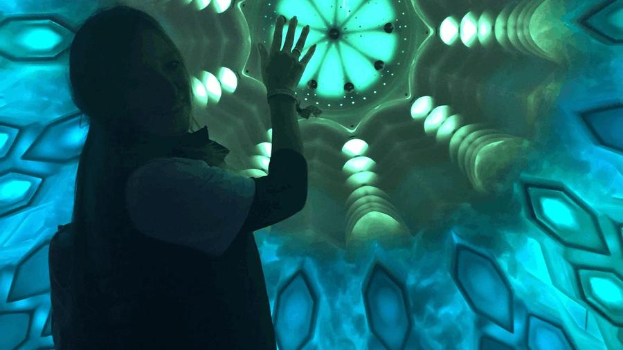

"Design is the joy of feeling uncomfortable — and diving deep into another person's world."

I'm a bilingual (English / Spanish) Senior UX Designer with 15+ years crafting multimodal and AI-enhanced experiences across voice assistants, open source, IoT, music technology, and consumer products.
Growing up in Colombia and living across 9 countries on 4 continents didn't just give me perspective — it gave me a lived understanding of how culture, language, and context shape what feels natural in a product. I design for the full spectrum of human diversity, not just a default user.
Being bilingual means I bring nuance to every culture I design for — and every team I work with. Understand people first, design second. The process always starts with people — their context, motivations, and the moments that matter.
I'm always asking: how can this be clearer? Easier? More helpful for the person actually using it?
Great design is a team sport. The technical skills get you in the room — the human skills determine what you build together.
Working across cultures gave me something no methodology can teach — a genuine understanding of how context shapes what feels intuitive. As a bilingual Latina designer, I bring perspectives still underrepresented in tech. That's not just background — it's a competitive advantage.